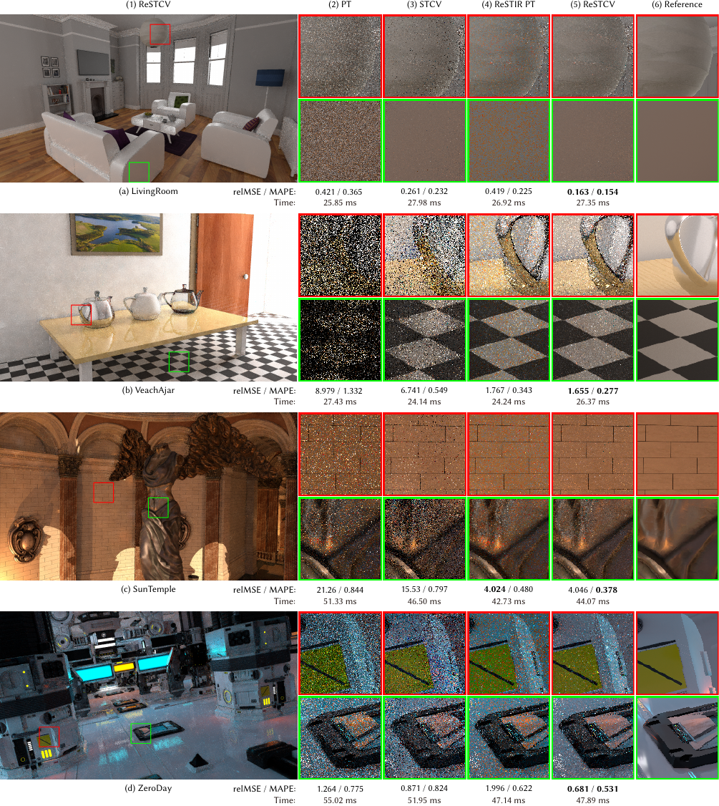
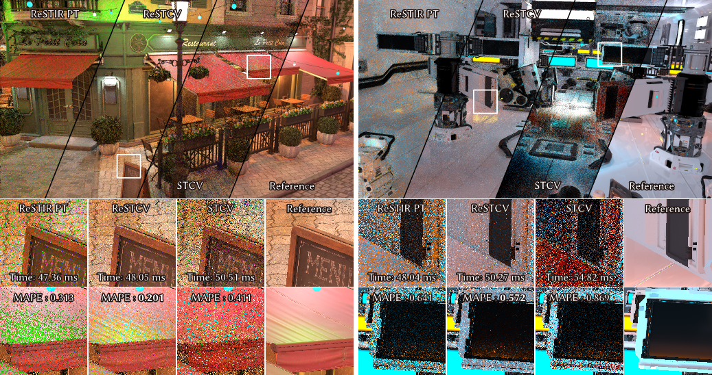
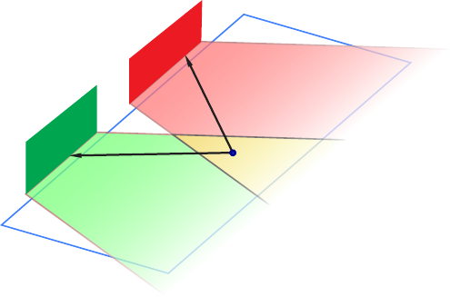
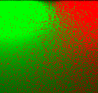
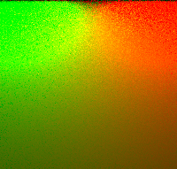
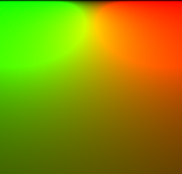
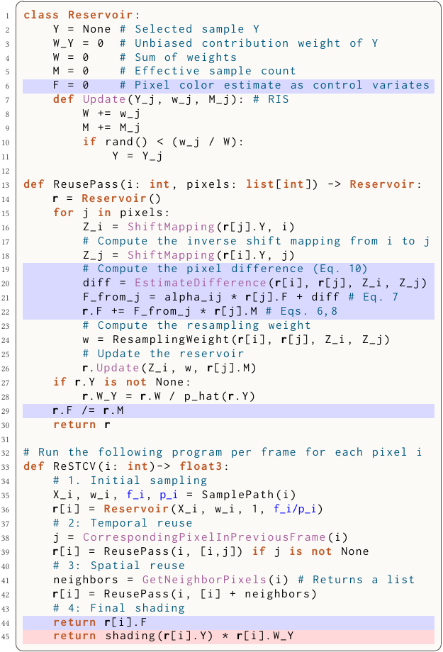
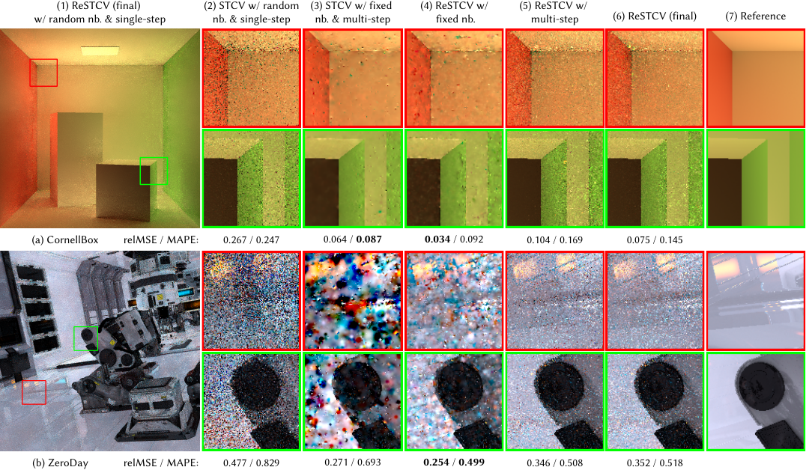
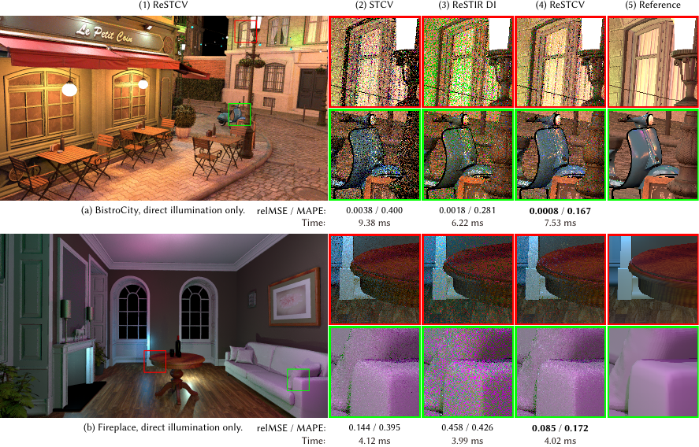
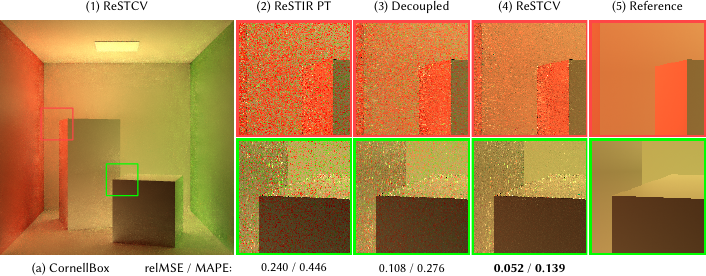

Equal-time comparison
Across dynamic scenes, ReSTCV reduces the color noise that remains visible in ReSTIR PT while preserving the efficient sample distribution provided by reservoir reuse.
SIGGRAPH Conference Papers 2026
ReSTCV combines ReSTIR-style sample reuse with spatio-temporal control variates, reducing variance and stabilizing color under tight real-time sampling budgets.

Abstract
Real-time path tracing demands high visual quality under extremely tight sampling budgets, often relying on reservoir-based spatio-temporal importance resampling (ReSTIR) to maximize sample quality. However, ReSTIR typically estimates the pixel integral using a single representative sample selected via a scalar target function such as luminance, which can leave substantial per-channel variance in chromatic scenes.
ReSTCV integrates spatio-temporal control variates into ReSTIR. It reuses correlated estimates across pixels and frames, estimates pixel differences with reservoir samples, and replaces single-sample shading with accumulated path contributions. The result is a practical real-time framework with modest overhead and significantly cleaner color stability.
Core Idea
Standard ReSTIR stores one representative sample in a reservoir. ReSTCV keeps this reuse structure, but also maintains a color estimate as a control variate. During temporal and spatial reuse, neighboring reservoirs provide auxiliary estimates, while ReSTIR-based difference estimators correct them for the target pixel.
This makes the final estimate less dependent on a single retained path sample, narrowing the gap between scalar luminance sampling and vector-valued color reconstruction.




Algorithm

The implementation stores an additional accumulated color estimate in each reservoir, estimates pixel differences during reuse, and returns the control-variate estimate for final shading.
Results

Across dynamic scenes, ReSTCV reduces the color noise that remains visible in ReSTIR PT while preserving the efficient sample distribution provided by reservoir reuse.

We compare fixed versus random neighbor selection and single versus multiple control-variate updates. Random neighbor selection avoids structural artifacts, while ReSTCV obtains strong reuse from spatio-temporal reservoirs without requiring costly repeated updates.

ReSTCV keeps the direct-illumination sampling benefits of ReSTIR while accumulating neighboring color estimates, which is especially useful for scenes with multiple colored lights.

Compared with ReSTIR PT and decoupled shading, ReSTCV accumulates spatio-temporal contributions rather than relying on a single final shading sample.
Citation
This is a pre-publication citation for convenience. We'll update it with the final metadata once the paper page is publicly available.
@inproceedings{shi2026restcv,
title = {Spatio-Temporal Control Variates with ReSTIR for Real-Time Rendering},
author = {Shi, Zhong and Wu, Cunhao and Wu, Lifan and Xu, Kun},
booktitle = {Special Interest Group on Computer Graphics and Interactive Techniques Conference Conference Papers (SIGGRAPH Conference Papers '26)},
year = {2026},
doi = {10.1145/3799902.3811113},
note = {To appear}
}